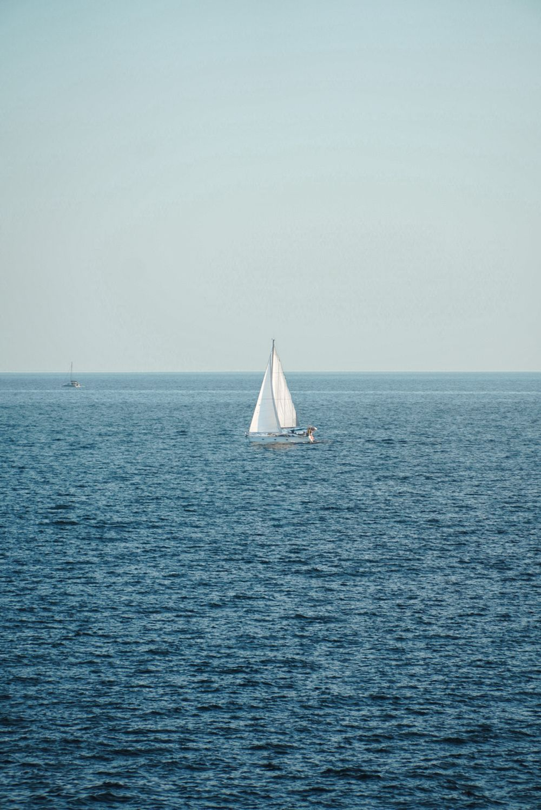
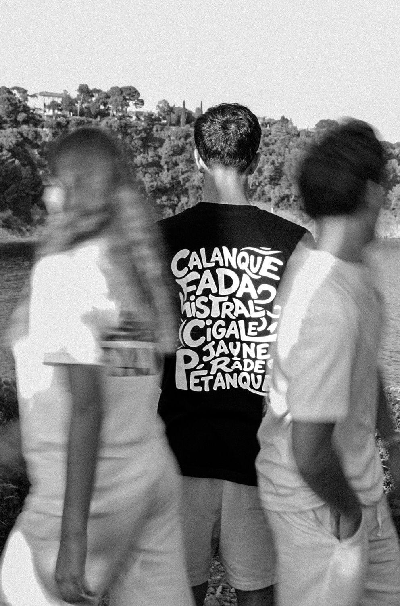
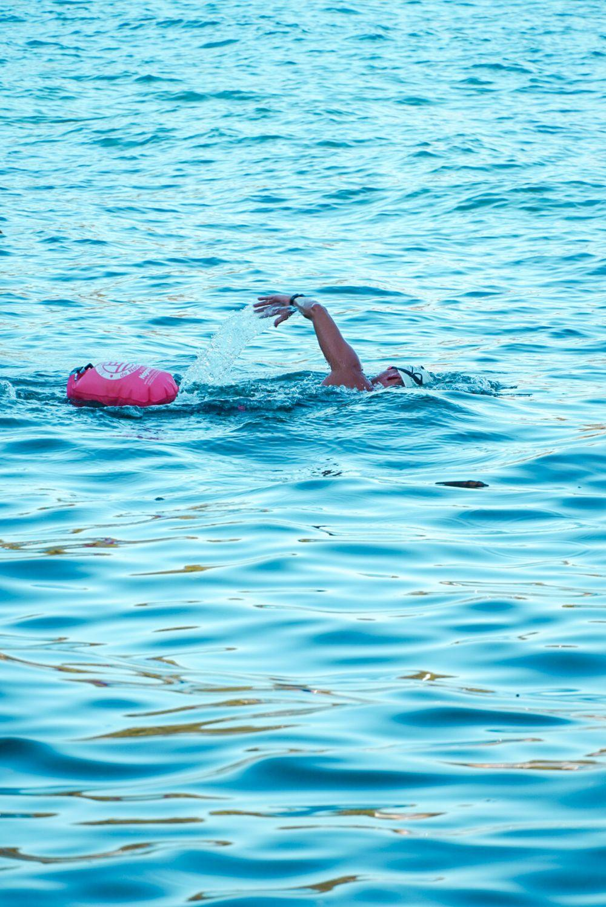
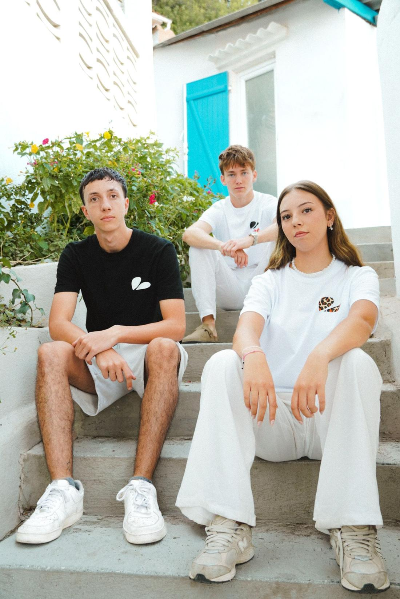

La vibe de Toulon dans ton dressing
T-shirts pensés à Toulon, en séries limitées. 100 % coton.
La collection



Retrouve-nous à la Guinguette de Mayol
Les jours de match à domicile, FORK installe son stand à la Guinguette de Mayol avec la collection du moment. Viens essayer, récupérer ta commande ou parler rugby.
Prochains matchs à Mayol
- sam. 24 oct. · 21h00RCT – Section Paloise
- Week-end du 7–8 nov.RCT – Stade Français Paris
- Week-end du 5–6 déc.RCT – Union Bordeaux-Bègles
- sam. 12 déc. · 21h00RCT – Black Lion
- Week-end du 2–3 janv.RCT – Montpellier HR
- sam. 9 janv. · 14h00RCT – Ospreys
- Week-end du 23–24 janv.RCT – Aviron Bayonnais
- Week-end du 20–21 févr.RCT – ASM Clermont
- Week-end du 20–21 marsRCT – LOU Rugby
- Week-end du 8–9 maiRCT – Castres Olympique
- Week-end du 29–30 maiRCT – USAP
FORK est sur place environ 2 h avant le coup d'envoi. Les horaires « à confirmer » sont fixés par la Ligue quelques semaines avant le match. Calendrier issu du site officiel du RCT, sous réserve de modification.
Suis-nous sur InstagramL'histoire de FORK
FORK, c'est une identité née à Toulon : la rade, le Faron, la culture d'ici. On produit nos pièces en séries limitées pour éviter la surproduction, en 100 % coton.

Préviens-moi de la prochaine collection
Laisse ton e-mail : tu seras prévenu dès la sortie des nouveaux t-shirts FORK. Pas de spam, désinscription en un clic.
Questions fréquentes
Quels sont les délais et frais de livraison ?
Les commandes sont expédiées en Colissimo avec suivi, en France métropolitaine, en général 1 à 3 jours ouvrés après la validation du paiement ; le délai de transport dépend ensuite de La Poste. La livraison est offerte à moins de 10 km du centre de Toulon. Au-delà, elle coûte 7,64 €. Le montant exact est calculé à partir de ton adresse et affiché avant le paiement.
Quelle taille choisir ?
Nos t-shirts existent en S, M, L, XL, XXL et 3XL selon les modèles (les tailles disponibles sont indiquées sur chaque fiche). Les mesures exactes de chaque taille sont en cours de confirmation auprès de notre fournisseur. En attendant, écris-nous sur WhatsApp au 07 66 75 18 40, on te conseille.
Dois-je créer un compte pour commander ?
Non. Tu peux commander sans compte. Si tu te connectes plus tard avec Google en utilisant la même adresse e-mail, ta commande apparaît automatiquement dans « Mes commandes ».
Comment suivre mon colis ?
Dès l'expédition, tu reçois un e-mail avec le numéro de suivi et le bouton « Suivre mon colis ». Le suivi est aussi visible dans ton compte, rubrique « Mes commandes ».
Puis-je modifier ou annuler ma commande ?
Oui, tant que le colis n'a pas été expédié. Écris-nous sur WhatsApp au 07 66 75 18 40 avec ton numéro de commande.